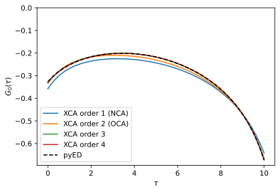
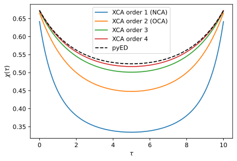

[1]:
%matplotlib inline
%config InlineBackend.figure_format = 'svg'
import warnings
warnings.filterwarnings("ignore") #ignore some matplotlib warnings
import numpy as np
from mpi4py import MPI
from triqs.plot.mpl_interface import plt, oplot, oplotr, oploti
plt.rcParams["figure.figsize"] = (6,4) # set default size for all figures
One-boson retarded interaction
This tutorial shows how to include a retarded (dynamical) interaction in a triqs_xca calculation. It is adapted from the TRIQS/ctseg tutorial of the same name, which solves the model below with continuous-time quantum Monte Carlo, so that the two solvers can be compared directly.
The model is the smallest one with a retarded interaction: a single fermionic level (0) hybridized with one bath level (1) and coupled linearly to one bosonic mode,
Integrating out the bath level and the boson leaves an action for the level 0 alone,
with \(H_{0} = \epsilon_0 c^\dagger_0 c_0\), \(n_0 = c^\dagger_0 c_0\), the hybridization function \(\Delta(i\nu_n) = \frac{V^2}{i\nu_n - \epsilon_1}\), and the retarded interaction \(\mathcal{U}(i\omega_n) = - 2 g^2 \frac{\omega_0}{\omega_0^2 - (i\omega_n)^2} \,.\)
triqs_xca expands in the hybridization and in the retarded interaction on the same footing: the expansion order counts hybridization lines and interaction lines together in the pseudo-particle self-energy diagrams. Below we compare the results of the first four expansion orders (the first two being the non-crossing and one-crossing approximations, NCA and OCA) for the single particle Green’s function \(G_0(\tau) = - \langle \mathcal{T} c_0(\tau) c_0^\dagger \rangle\) and the density
correlator \(\chi(\tau) = \langle \mathcal{T} n_0(\tau) n_0 \rangle\) with exact diagonalization of \(H\). The bosonic Hilbert space is infinite, so the diagonalization works in a truncated boson number space and is converged with respect to the truncation.
Solving the retarded action with triqs_xca
1. We start from the parameters of the model. The bosonic mode frequency \(\omega_0 = 1\) is the unit of energy and the coupling \(g = 1/2\) is in the intermediate coupling regime (at the stronger coupling \(g = 1\) of the ctseg tutorial the order-by-order convergence is slow). The chemical potential \(\mu = -g^2/\omega_0\) compensates the polaron shift of the level, so that \(\epsilon_0 = 0\) corresponds to half filling.
[2]:
eps0, eps1, V, g, omega0 = -0.1, +0.1, 0.25, 0.5, 1.
mu = -g**2 / omega0 # For half-filling at eps0 = 0
beta = 10.
2. Next we construct a solver for the local Hamiltonian \(H_0 - \mu n_0\). The imaginary time response functions are represented in the Discrete Lehmann Representation (DLR), with accuracy eps and frequency cut-off w_max chosen such that the spectra of \(\Delta\), \(\mathcal{U}\) and \(G_0\) are covered.
[3]:
from triqs.operators import n
from triqs_xca import BlockSparseSolver as Solver
S = Solver(
H_loc=(eps0 - mu) * n('0', 0),
beta=beta, # Inverse temperature
gf_struct=[('0', 1)], # Green's function structure 1st index: name, 2nd index: dimension of subspace
eps=1e-10, # Accuracy of Discrete Lehmann Representation (DLR) used for imaginary time response functions
w_max=5.0, # DLR frequency cut-off (the spectrum of the model must be in the range [-w_max, +w_max])
)
Starting run with 8 MPI rank(s) at : 2026-09-29 14:57:48.635383
____ ____________ _____
\ \/ /\_ ___ \ / _ \
\ / / \ \/ / /_\ \
/ \ \ \____/ | \
/___/\ \ \______ /\____|__ /
\_/ \/ \/ [github.com/TRIQS/xca]
beta = 10.0, w_max = 5.0, eps = 1e-10, N_DLR = 24
AtomDiagReal: dim 2 with 2 subspaces dims [1] freq [2] E min/max +0.00E+00/+1.50E-01
3. The hybridization function is stored in S.Delta_tau on the DLR imaginary time mesh of the solver. We set it from its Matsubara frequency expression \(\Delta(i\nu_n) = \frac{V^2}{i\nu_n - \epsilon_1}\),
[4]:
from triqs.gfs import make_gf_dlr_imfreq, make_gf_dlr_imtime, inverse, iOmega_n
Delta_iw = make_gf_dlr_imfreq(S.Delta_tau['0'])
Delta_iw << V**2 * inverse(iOmega_n - eps1)
S.Delta_tau['0'] << make_gf_dlr_imtime(Delta_iw);
4. The retarded interaction is a bosonic function of imaginary time, so we construct it on a bosonic DLR mesh with the same \(\beta\), eps and w_max as the solver, again from its Matsubara frequency expression \(\mathcal{U}(i\omega_n) = - 2 g^2 \frac{\omega_0}{\omega_0^2 - (i\omega_n)^2}\).
Retarded interactions are passed to the solver with set_dynamic_interactions, as a list of operators \(O_i\) together with a matrix valued kernel \(D_{ij}(\tau)\), which the solver interprets as the action term \(\iint_0^\beta d\tau d\tau' \sum_{ij} O_i^\dagger(\tau) \, D_{ij}(\tau - \tau') \, O_j(\tau')\) without a factor \(\frac{1}{2}\). Comparing with the action \(\mathcal{S}\) above, the single operator \(O = n_0\) therefore comes with the kernel
\(D(\tau) = \frac{1}{2} \mathcal{U}(\tau)\).
[5]:
from triqs.gfs import Gf, MeshDLRImTime
b_mesh = MeshDLRImTime(beta=beta, statistic='Boson', eps=S.mesh_tau.eps, w_max=S.mesh_tau.w_max, symmetrize=False)
U_tau = Gf(mesh=b_mesh, target_shape=[1, 1])
U_iw = make_gf_dlr_imfreq(U_tau)
U_iw << -2 * g**2 * omega0 * inverse(omega0**2 - iOmega_n*iOmega_n)
U_tau << make_gf_dlr_imtime(U_iw)
S.set_dynamic_interactions(dynint_ops=[n('0', 0)], dynint_tau=0.5 * U_tau)
5. Finally we run the solver for expansion orders one to four, and evaluate the density correlator \(\chi(\tau) = \langle \mathcal{T} n_0(\tau) n_0 \rangle\) at the same order with eval_one_time_correlator. For plotting, the DLR results are interpolated onto a dense imaginary time mesh.
The number of diagrams grows rapidly with the order, and the fourth order dominates the run time by far. The diagram evaluation is MPI parallel, and this notebook was executed with eight MPI ranks.
[6]:
from triqs.gfs import make_gf_imtime
n_tau = 401
results = {}
for order in [1, 2, 3, 4]:
S.solve(max_order=order, tol=1e-6, maxiter=50)
chi_tau = -S.eval_one_time_correlator(S.G, max_order=order, ops_tau=[n('0', 0)], ops_0=[n('0', 0)]) # returns -<T n(tau) n(0)>
results[order] = dict(
G_tau=make_gf_imtime(S.G_tau['0'], n_tau=n_tau),
chi_tau=make_gf_imtime(chi_tau, n_tau=n_tau))
Hybridization: using DLR expansion with N_poles = 24
iter = 1, diff_G = 5.16E-01, Z-1 = -1.88E-13, eta = 1.59E-01
iter = 2, diff_G = 9.77E-02, Z-1 = -3.69E-13, eta = 1.97E-01
iter = 3, diff_G = 1.43E-02, Z-1 = -5.22E-14, eta = 2.02E-01
iter = 4, diff_G = 1.56E-03, Z-1 = -5.33E-15, eta = 2.03E-01
iter = 5, diff_G = 9.97E-05, Z-1 = -5.55E-16, eta = 2.03E-01
iter = 6, diff_G = 4.28E-06, Z-1 = +2.22E-16, eta = 2.03E-01
iter = 7, diff_G = 1.33E-07, Z-1 = +0.00E+00, eta = 2.03E-01
Converged after 7 iterations with diff_G = 1.33E-07 < tol = 1.00E-06
Timing: incl. excl.
----------------------------------------------------
Adapol hybridization fit: 0.000 0.000 0.4% |
AtomDiag Init: 0.001 0.001 1.4% ||
DiagramEvaluator Init: 0.000 0.000 0.7% |
Dyson: 0.008 0.001 1.8% ||
Setup: 0.005 0.005 10.2% |---|
Solve: 0.002 0.002 5.2% |-|
Sigma: 0.005 0.000 0.6% |
Order 1: 0.004 0.004 9.9% |---|
Single-particle Gf: 0.000 0.000 0.0% |
Order 1: 0.000 0.000 0.3% |
Other: 0.031 0.031 69.5% |---------------------------|
----------------------------------------------------
Total: 0.044 100.0%
Adapol: compressing 24 poles, tol 1.00E-07 on the imaginary time L2 error
beta = 10, 24 Matsubara points, linear residue fit
Adapol: [1/2 bracket] growing the AAA step count until the tolerance is met
2 steps -> 3 poles, error 2.28E-11 <= tol ok AAA residual 2.48E-11
Adapol: [2/2 bisect] smallest step count still meeting the tolerance, candidates 1..2
1 steps -> 1 poles, error 3.06E-02 > tol fail AAA residual 1.01E-01 candidates 2..2
Adapol: done -- 3 poles (2 AAA steps), error 2.28E-11 <= tol 1.00E-07, 2 pipeline passes, 2 AAA runs
Adapol: Fit error = 2.28E-11 < tol = 1.00E-07, N_poles = 3
iter = 1, diff_G = 2.70E-02, Z-1 = -1.15E-13, eta = 2.11E-01
iter = 2, diff_G = 8.20E-03, Z-1 = -3.75E-14, eta = 2.13E-01
iter = 3, diff_G = 6.05E-04, Z-1 = -3.33E-15, eta = 2.13E-01
iter = 4, diff_G = 5.84E-05, Z-1 = -2.22E-16, eta = 2.13E-01
iter = 5, diff_G = 2.68E-06, Z-1 = +4.44E-16, eta = 2.13E-01
iter = 6, diff_G = 9.30E-08, Z-1 = +4.44E-16, eta = 2.13E-01
Converged after 6 iterations with diff_G = 9.30E-08 < tol = 1.00E-06
Timing: incl. excl.
----------------------------------------------------
Adapol hybridization fit: 0.010 0.010 16.1% |-----|
AtomDiag Init: 0.001 0.001 1.0% |
DiagramEvaluator Init: 0.000 0.000 0.6% |
Dyson: 0.009 0.001 1.8% ||
Setup: 0.005 0.005 7.3% |--|
Solve: 0.003 0.003 5.4% |-|
One-time correlator: 0.000 0.000 0.0% |
Order 1: 0.000 0.000 0.2% |
Sigma: 0.009 0.000 0.6% |
Order 1: 0.006 0.006 9.6% |---|
Order 2: 0.003 0.003 4.7% |-|
Single-particle Gf: 0.001 0.000 0.0% |
Order 1: 0.000 0.000 0.4% |
Order 2: 0.000 0.000 0.6% |
Other: 0.032 0.032 51.5% |--------------------|
----------------------------------------------------
Total: 0.062 100.0%
Adapol: compressing 24 poles, tol 1.00E-07 on the imaginary time L2 error
beta = 10, 24 Matsubara points, linear residue fit
Adapol: [1/2 bracket] growing the AAA step count until the tolerance is met
2 steps -> 3 poles, error 2.28E-11 <= tol ok AAA residual 2.48E-11
Adapol: [2/2 bisect] smallest step count still meeting the tolerance, candidates 1..2
1 steps -> 1 poles, error 3.06E-02 > tol fail AAA residual 1.01E-01 candidates 2..2
Adapol: done -- 3 poles (2 AAA steps), error 2.28E-11 <= tol 1.00E-07, 2 pipeline passes, 2 AAA runs
Adapol: Fit error = 2.28E-11 < tol = 1.00E-07, N_poles = 3
iter = 1, diff_G = 6.35E-03, Z-1 = -2.58E-14, eta = 2.14E-01
iter = 2, diff_G = 1.39E-03, Z-1 = -7.77E-15, eta = 2.15E-01
iter = 3, diff_G = 7.70E-05, Z-1 = +0.00E+00, eta = 2.15E-01
iter = 4, diff_G = 6.39E-06, Z-1 = -4.44E-16, eta = 2.15E-01
iter = 5, diff_G = 2.37E-07, Z-1 = +0.00E+00, eta = 2.15E-01
Converged after 5 iterations with diff_G = 2.37E-07 < tol = 1.00E-06
Timing: incl. excl.
----------------------------------------------------
Adapol hybridization fit: 0.013 0.013 7.3% |--|
AtomDiag Init: 0.001 0.001 0.3% |
DiagramEvaluator Init: 0.000 0.000 0.2% |
Dyson: 0.010 0.001 0.8% |
Setup: 0.005 0.005 2.5% ||
Solve: 0.004 0.004 2.3% ||
One-time correlator: 0.001 0.000 0.0% |
Order 1: 0.000 0.000 0.1% |
Order 2: 0.000 0.000 0.2% |
Sigma: 0.110 0.000 0.3% |
Order 1: 0.007 0.007 4.0% |-|
Order 2: 0.006 0.006 3.1% ||
Order 3: 0.097 0.097 53.3% |--------------------|
Single-particle Gf: 0.014 0.000 0.0% |
Order 1: 0.000 0.000 0.2% |
Order 2: 0.001 0.001 0.4% |
Order 3: 0.012 0.012 6.9% |--|
Other: 0.033 0.033 17.9% |------|
----------------------------------------------------
Total: 0.182 100.0%
Adapol: compressing 24 poles, tol 1.00E-07 on the imaginary time L2 error
beta = 10, 24 Matsubara points, linear residue fit
Adapol: [1/2 bracket] growing the AAA step count until the tolerance is met
2 steps -> 3 poles, error 2.28E-11 <= tol ok AAA residual 2.48E-11
Adapol: [2/2 bisect] smallest step count still meeting the tolerance, candidates 1..2
1 steps -> 1 poles, error 3.06E-02 > tol fail AAA residual 1.01E-01 candidates 2..2
Adapol: done -- 3 poles (2 AAA steps), error 2.28E-11 <= tol 1.00E-07, 2 pipeline passes, 2 AAA runs
Adapol: Fit error = 2.28E-11 < tol = 1.00E-07, N_poles = 3
iter = 1, diff_G = 1.15E-03, Z-1 = -8.99E-15, eta = 2.15E-01
iter = 2, diff_G = 3.05E-04, Z-1 = -1.55E-15, eta = 2.15E-01
iter = 3, diff_G = 1.39E-05, Z-1 = -4.44E-16, eta = 2.15E-01
iter = 4, diff_G = 8.82E-07, Z-1 = -3.33E-16, eta = 2.15E-01
Converged after 4 iterations with diff_G = 8.82E-07 < tol = 1.00E-06
Timing: incl. excl.
----------------------------------------------------
Adapol hybridization fit: 0.016 0.016 0.4% |
AtomDiag Init: 0.001 0.001 0.0% |
DiagramEvaluator Init: 0.000 0.000 0.0% |
Dyson: 0.011 0.002 0.0% |
Setup: 0.005 0.005 0.1% |
Solve: 0.005 0.005 0.1% |
One-time correlator: 0.014 0.000 0.0% |
Order 1: 0.000 0.000 0.0% |
Order 2: 0.001 0.001 0.0% |
Order 3: 0.012 0.012 0.3% |
Sigma: 3.119 0.001 0.0% |
Order 1: 0.009 0.009 0.2% |
Order 2: 0.008 0.008 0.2% |
Order 3: 0.164 0.164 4.0% |-|
Order 4: 2.938 2.938 71.1% |---------------------------|
Single-particle Gf: 0.937 0.000 0.0% |
Order 1: 0.001 0.001 0.0% |
Order 2: 0.001 0.001 0.0% |
Order 3: 0.026 0.026 0.6% |
Order 4: 0.909 0.909 22.0% |--------|
Other: 0.034 0.034 0.8% |
----------------------------------------------------
Total: 4.132 100.0%
Reference solution from exact diagonalization (using pyED)
For the reference solution we diagonalize the full Hamiltonian \(H\) with two fermions and one boson (truncated to Nb_max boson quanta, which is fully converged for the parameters used here) using pyED, and evaluate \(G_0(\tau)\) and \(\chi(\tau)\) on the same dense imaginary time mesh.
[7]:
from pyed.SparseExactDiagonalization import SparseExactDiagonalization
from pyed.SparseMatrixFockStates import SparseMatrixFermiBoseCreationOperators
def get_ed_ref(eps0, eps1, V, g, omega0, mesh_tau, Nb_max=10):
ops = SparseMatrixFermiBoseCreationOperators(Nf=2, Nb=1, Nb_max=Nb_max)
c0, c1, b = ops.c_dag[0].getH(), ops.c_dag[1].getH(), ops.b_dag[0].getH()
n0, n1, nb = c0.getH() * c0, c1.getH() * c1, b.getH() * b
H = eps0 * n0 + eps1 * n1 + V * (c1.getH() * c0 + c0.getH() * c1) + g * (b + b.getH()) * n0 + omega0 * nb
ed = SparseExactDiagonalization(H, mesh_tau.beta)
tau = np.array([float(t) for t in mesh_tau])
g_tau = Gf(mesh=mesh_tau, target_shape=[1, 1])
g_tau.data[:, 0, 0] = ed.get_tau_greens_function_component(tau, c0, c0.getH())
chi_tau = Gf(mesh=mesh_tau, target_shape=[1, 1])
chi_tau.data[:, 0, 0] = -ed.get_tau_greens_function_component(tau, n0, n0) # pyed returns -<T A(tau) B(0)>
return g_tau, chi_tau
g_tau_ed, chi_tau_ed = get_ed_ref(eps0 - mu, eps1, V, g, omega0, results[1]['G_tau'].mesh)
Single particle Green’s function
The first order (NCA) result captures the shape of \(G_0(\tau)\), and every additional order moves the result closer to the exact diagonalization reference.
[8]:
def label(order):
return f'XCA order {order}' + {1: ' (NCA)', 2: ' (OCA)'}.get(order, '')
for order, r in results.items():
oplotr(r['G_tau'], label=label(order))
oplotr(g_tau_ed, 'k--', label='pyED')
plt.xlabel(r'$\tau$'); plt.ylabel(r'$G_0(\tau)$'); plt.ylim(top=0); plt.legend(loc='best');

Dynamic density correlation
At first order the density correlator contains no interaction vertex, and its deviation from the reference is larger than for \(G_0(\tau)\). The vertex corrections at higher orders bring \(\chi(\tau)\) progressively closer to the exact result, although it converges more slowly than \(G_0(\tau)\).
[9]:
for order, r in results.items():
oplotr(r['chi_tau'], label=label(order))
oplotr(chi_tau_ed, 'k--', label='pyED')
plt.xlabel(r'$\tau$'); plt.ylabel(r'$\chi(\tau)$'); plt.legend(loc='best');

[10]:
for order, r in results.items():
G_err = np.max(np.abs(r['G_tau'].data - g_tau_ed.data))
chi_err = np.max(np.abs(r['chi_tau'].data - chi_tau_ed.data))
print(f'order {order}: max|G_0 - G_0^ED| = {G_err:2.2E}, max|chi - chi^ED| = {chi_err:2.2E}')
order 1: max|G_0 - G_0^ED| = 3.08E-02, max|chi - chi^ED| = 1.90E-01
order 2: max|G_0 - G_0^ED| = 1.37E-02, max|chi - chi^ED| = 7.66E-02
order 3: max|G_0 - G_0^ED| = 1.51E-03, max|chi - chi^ED| = 2.33E-02
order 4: max|G_0 - G_0^ED| = 3.69E-04, max|chi - chi^ED| = 7.57E-03
The deviation from the exact reference decreases with every expansion order, for \(G_0(\tau)\) faster than for \(\chi(\tau)\).